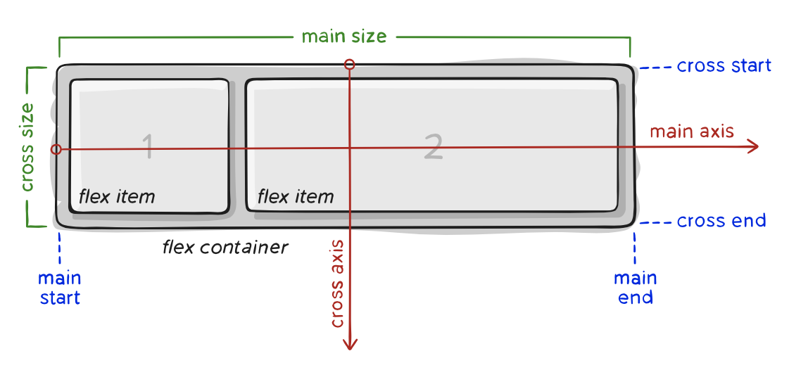
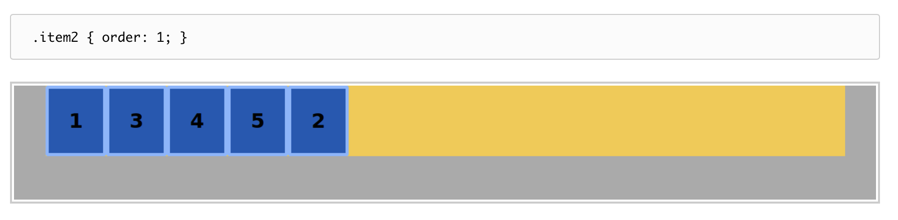
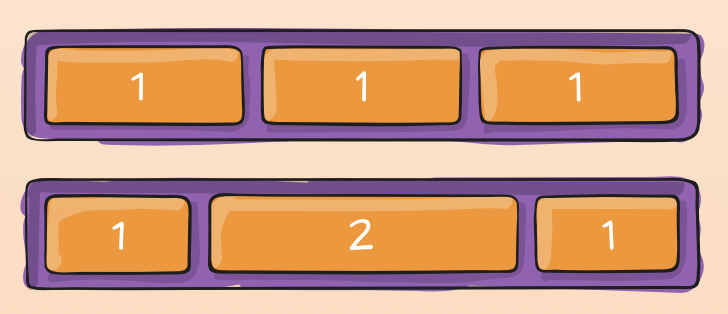

This week we are learning about flex box in CSS which can be extremely challenging to understand but also extremely powerful once you can use if efficiently. Flex Box has helped solve many problems such as aligning text or an image on a browser page or properly aligning several objects in a straight line. Although these sound like simple tasks, it was very complicated to do them correctly for a long time until flex box was introduced. My blog this week focuses on the basics of Flex Box and elaborates on the things that confused me even after reading the assigned chapter. I found a good website that highlighted the terminology that can be confusing and used tons of diagrams to explain the components better.
Flex Box Terminology

There is a lot of terminology associated with the Flex Box. It is important to understand the terminology before trying to work with Flex Box CSS code in order to efficiently use all of its capabilities. When first looking at a Flex Box component, it is important to know what axis the components reside on. This is known as the main axis and can be either the horizontal or vertical axis depending on how you set it using the flex-direction property which will be explained in more detail below. The opposite axis is called the cross axis. The main start and main end refer to where the flex items begin and end on the main axis within the container. The cross start and cross end have the same idea as they refer to the beginning and end of where the flex items reside on cross axis. Lastly, we have the main size and the cross size. Each refer to either the height or width of the container depending on which is the main axis and which is the cross axis.
Flex Box Components and Their Properties
A flex box is composed of two pieces: a container and the flex items. There is typically only one container and then as many flex items as needed.

As shown in the image above, you can see that the container encompasses all the flex items into a single component in which the majority of the CSS formatting is applied to. I am going to go through and explain the main properties that are assoicated with the container (also known as the parent) and then the main properties that are associated with the flex items (also known as the children) so it is easier to understand which properties impact the container vs. the individual items.
Parent Properties
There are an endless number of properties that are associated with the container or parent of the Flex Box methodology. However, there are 5 that are really important to understanding in order to grasp the concept of Flex Box. The first is the easiest since we have seen it before with block and inline which I talk about in my Week 2 blog and that is the display property. This property impact how the components encompasses in this container will be displayed and in this case, we always choose 'flex'. The next important property is flex-direction that I briefly mentioned above. This determines where your items will reside and therefore, detremines the main and cross axises. This property can be set to row or column to make the items flow left to right or top to bottom or row-reverse / column-reserve which is maintain the orientation but have them flow backwards so right to left or bottom to top. The third property is flex-wrap. This property is used to set whether the items should wrap to the next line once overflow occurs. There are three options: nowrap which will not wrap the items, wrap which will wrap the items and wrap-reverse which will wrap the items onto multiple lines from bottom to top rather than the traditional top to bottom. The fourth property is justify-content which defines the alignment along the main axis in comparison to the other items. Flex-start and flex-end pack the items towards the beginning or end of the container with minimal spacing in between each. Center obviously centers the items along the main axis. Space-between places the first and last items on the start and end lines and then spaces the rest of the items along the axis. Space-around distributes the spacing so that it is even on each side of every items and lastly, space-evenly distributes the space so it is even between two items. There are many more options but these are the 6 most common ones. Lastly, the align-items property is used to detremine how the items are distributed along the cross axis. It has a very similar purpose to justify-content but for the cross axis. The options for this one include stretch which allows the items to fill the container, flex-start and flex-end which places the items at the beginning or end of the cross axis, center which centers the items along the cross axis, and baseline which aligns the items in a way that their baselines are aligned. These are the main ones that I think are important but be sure to check out the other important Flex Box parent properties at the link in the reference section. Below is just a quick code sample with all the options I discussed above:
.parent {
display: flex;
flex-direction: row | row-reverse | column | column-reverse;
flex-wrap: nowrap | wrap | wrap-reverse;
justify-content: flex-start | flex-end | center | space-between | space-around | space-evenly;
align-items: stretch | flex-start | flex-end | center | baseline;
}
Children Properties
The Flex Box children also have a couple properties that are set within the children themselves. There are more than these below but these are the two that I personally have experience with and feel comfortable explaining. The first is order which allows you to detremine which order the items are placed. The default will place them in the source order. This property is a number value. If you had 5 children and you set that the 2nd item was order: 1, then it would be moved to the 1st location which is detremined from right to left. Therefore, the item would be the last position one along the main axis.

The second property is flex-grow which detremines how additonal, unused space will be divided up among the items. The property is also a number value which represents a portion of the space. If there are three children with flex-grow properties of 1, 2, and 1 then the first and last items would take up 1/4th for each of them of the extra space and the third item would take up 2/4ths or 1/2 of the space left over.

.children {
order: number value;
flex-grow: number value;
}
References
CSS Flex Box Tips & Tricks
Order Property in More Detail